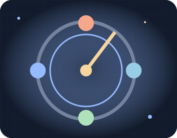

ROTATING ASTROLABE · TACTICAL ROGUELIKE
旋轉星盤法師
排列輪轉法術，在指針掃過時形成防禦與爆發循環。
生命32 / 32
魔力8 / 10
地下樓層1 / 3
剩餘敵人3
✦ 構築工坊⇩ 下樓出口＋ 療癒池紅框：下次攻擊落點
第 0 回合
先選構築，再探索地城。
方向按鈕目前：移動
文字地圖與敵人狀態
玩法與第一次遠征
每個有效行動後指針轉一格，自動觸發該格法術。工坊替換下一格；點星盤兩格交換位置會耗一回合，能把護盾排在敵人蓄力完成前。特殊技一次推進兩格。
- 這是回合制地城：每次合法動作才推進敵人，沒有手速要求。先在起點右側的工坊選擇一種構築。
- 探索九乘九地圖。近擊對面向目標，特殊能力通常消耗 3 魔力；每兩回合回復 1 魔力，擊破敵人回復 2。防守增加 3 護盾並回魔。
- 敵人先以紅框預告落點，之後才攻擊。走出紅框、利用牆角或護盾，能降低傷害。冰面每回合耗 1 魔力，熔岩每回合造成 1 傷害。
- 本層構築完成且敵人全部擊破後，到右下角出口按下樓；共三層。換層回復 12 生命。療癒池每層一次，回復最多 16 生命。
- 滑鼠／觸控：先選「移動、近擊、能力」，再點方向按鈕或地圖。鍵盤：方向鍵或 WASD 移動，Shift＋方向近擊，Ctrl＋方向施法；空白能力、Q 防守、E 拾取、F 下樓、P 暫停、R 重來。
100 個挑戰採固定種子與標準 AI；各關地圖、敵人位置／組合、負重或武器起始條件有實質差異。自由遠征可選三種 AI 難度，但沒有宣稱每個進階對手都能套用同一條示範。
AI 與公平規則
輕鬆：視野 4 格、隔回合移動、兩回合蓄力。標準：視野 6 格，依通路追蹤，一回合蓄力。進階：視野 7 格、逐一比較可走格的路程及正面暴露，遠程敵人會保持距離。敵人只知道當前可見位置及最近三回合目擊，不讀取未來操作。牆外遠處的角色不會被無故追蹤。
所有回合完全確定；你可以慢慢思考。倒帶的殘影只重播已發生的錄影。示範也逐步使用一般玩家可按到的控制，沒有直接設定勝利。
100 關進度與自由選關
綠色格是手動通關。任意關卡都可選。提示與示範會永久標記本次為協助；重新開始才開啟新的手動紀錄。
本機儲存與證明範圍
每步自動保存合法操作紀錄；重新開啟後逐步重播還原並暫停。紀錄只留在你的瀏覽器；內容損壞時安全開新局，不接受無效座標或竄改的完成狀態。
每個挑戰均有通過同一個遊戲引擎的完整操作見證，證明在指定標準 AI 下存在通關方法。這不是唯一解，也不代表對任何不同策略的對手必勝。自由模式不影響手動挑戰成績。示範、暫停、重開、換關及離開分頁都會取消舊的播放計時器。